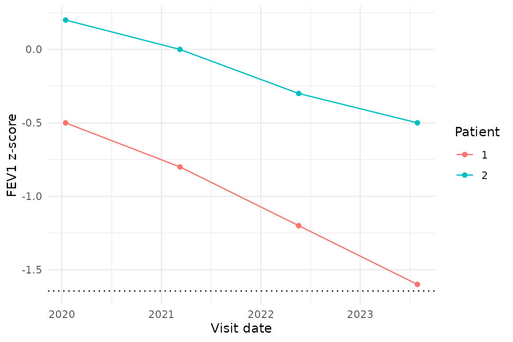

Longitudinal PFT analysis: change and FEV1Q
Source:vignettes/longitudinal-analysis.Rmd
longitudinal-analysis.RmdPFTs are often interpreted serially rather than from a single result.
pft provides two PFT-specific tools defined by the
Stanojevic 2022 standard that operate on serial measurements:
| Tool | Use case | Inputs |
|---|---|---|
pft_change() |
Two-point conditional change z-score (Stanojevic 2022 Box 2) | Two FEV1 z-scores + age + elapsed time |
pft_fev1q() |
Stanojevic 2022 Box 3 FEV1Q ratio; the standard’s recommended alternative to CCS in adults | FEV1 (litres) + sex |
For multi-point trajectory fitting (slopes, mixed-effects models,
disease-specific decline thresholds), use the right tool for the job
directly — stats::lm(), lme4::lmer(), or any
of the general-purpose longitudinal-modelling packages. Those decisions
depend on cohort design, covariates, and nesting structure in ways that
don’t generalise into a one-size-fits-all PFT wrapper.
1. Two-point conditional change score:
pft_change()
pft_change() evaluates whether the change between
two FEV1 z-scores is larger than expected from within-subject
variability and regression to the mean. The formula (Box 2 of Stanojevic
2022):
|CCS| > 1.96 is the two-sided 95 % significance
threshold:
# Box 2 worked example: 14-year-old male, FEV1 z dropped from -0.78
# to -1.60 over 3 months.
pft_change(z1 = -0.78, z2 = -1.60, age_t1 = 14, time_years = 0.25)
#> # A tibble: 1 × 3
#> ccs r_used is_significant
#> <dbl> <dbl> <lgl>
#> 1 -2.17 0.912 TRUEThe same drop spread over four years is not significant – the autocorrelation falls, so the same z-score change is more readily explained by noise:
pft_change(z1 = -0.78, z2 = -1.60, age_t1 = 14, time_years = 4)
#> # A tibble: 1 × 3
#> ccs r_used is_significant
#> <dbl> <dbl> <lgl>
#> 1 -1.55 0.762 FALSEScope. The formula was derived in a pediatric / young-adult cohort; the standard notes it has “yet to be validated, extended to adults” but allows it as “a reasonable tool to facilitate interpretation”. For adults the standard recommends FEV1Q instead (Box 3); see section 2 below.
2. FEV1Q in adults: pft_fev1q()
For adults, the 2022 standard recommends FEV1Q over the conditional change score (Box 3). FEV1Q is the ratio of FEV1 to a sex-specific denominator (0.5 L for males, 0.4 L for females – the 1st percentile of the adult lung-disease FEV1 distribution per Box 3). It is not a change score; it expresses FEV1 in absolute terms relative to that denominator, on a scale that’s comparable across patients and over time.
# Box 3 worked example: 70-year-old female with FEV1 = 0.9 L.
pft_fev1q(fev1 = 0.9, sex = "F", age = 70)
#> [1] 2.25The function refuses age < 18 by returning NA_real_
per the paper’s “not appropriate for children and adolescents” caveat.
See Stanojevic 2022 Box 3 for the source standard’s interpretation of
the resulting ratio.
3. Plotting trajectories
pft_plot() itself only produces single-patient lollipop
figures. For longitudinal trajectories, pipe a long-form
pft_long() (or hand-built) table into ggplot2
directly:
library(ggplot2)
serial <- data.frame(
patient_id = rep(1:2, each = 4),
visit_date = rep(as.Date(c("2020-01-15","2021-03-10",
"2022-05-20","2023-07-30")), 2),
fev1_zscore_2022 = c(-0.5, -0.8, -1.2, -1.6,
0.2, 0.0, -0.3, -0.5)
)
ggplot(serial, aes(visit_date, fev1_zscore_2022,
colour = factor(patient_id), group = patient_id)) +
geom_hline(yintercept = -1.645, linetype = "dotted") +
geom_line() + geom_point() +
labs(x = "Visit date", y = "FEV1 z-score", colour = "Patient") +
theme_minimal()
See also
-
vignette("interpretation-guide")– severity bands, pattern decision tree, 2022 vs 2005. -
vignette("diffusion-capacity")– DLCO interpretation and Hb correction. -
?pft_change,?pft_fev1qfor the function references.